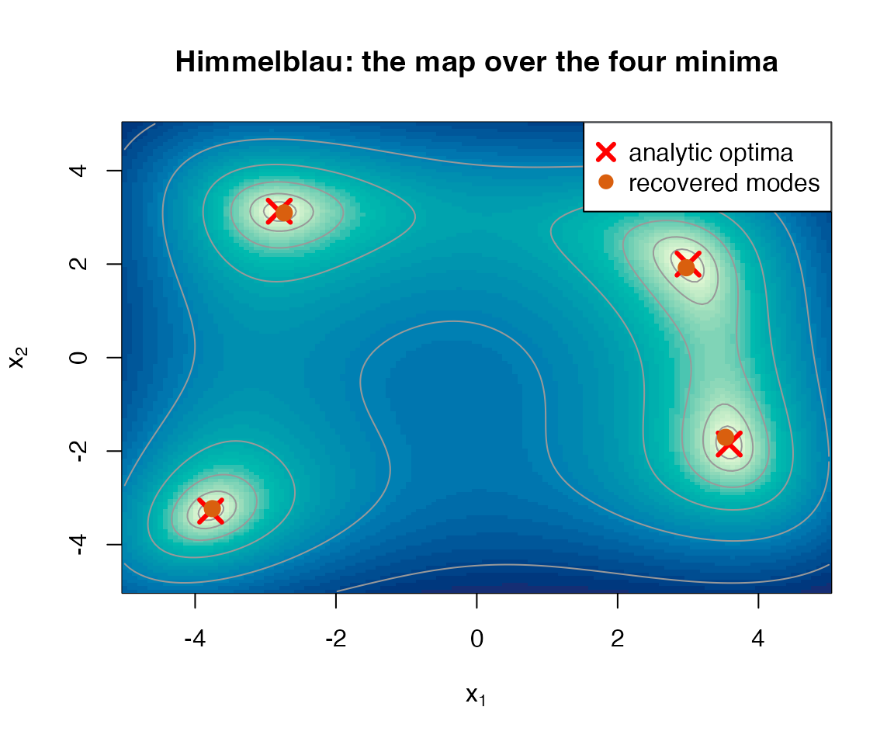

An objective is a density you can evaluate but not sample
An objective
to be minimised over a box defines an unnormalised density, the Gibbs
measure
,
whose mass concentrates on the low regions of
as the temperature
falls. That density can be evaluated point-wise but not directly
sampled, which is exactly regime (iii) of Hoek and Elliott (2024).
from_objective() fits a Gaussian-mixture proxy to
by cooling a short temperature ladder through the same
importance-sampled KLD-EM that fit_kld_em() runs,
warm-starting each step from the previous fit.
The point of the construction is not a single best point but the
whole picture. A multimodal
gives a multimodal Gibbs measure, so the fitted mixture spreads its
components across the basins and recovers the optima together.
The result is an ordinary gmm, so the closed-form operator
calculus – marginalisation, conditioning, divergence – applies to the
map of solutions. gmm_modes() reads the distinct optima off
that map.
A bimodal objective in one dimension
The objective has two minima, at and . We fit the map and resolve it.
f <- function(v) (v[1]^2 - 4)^2
fit <- from_objective(f, lower = -5, upper = 5, N = 6L,
is_size = 3000L, n_steps = 5L, seed = 1L)
modes <- gmm_modes(fit)
sort(round(modes$modes[, 1], 3))
#> [1] -2.006 2.019Both minima are recovered. The fitted object is a
gmm_fit, so the importance-sampling diagnostics are
available alongside the map.
ess_summary(fit)
#> $is_size
#> [1] 3000
#>
#> $ess
#> [1] 1577.087
#>
#> $ess_relative
#> [1] 0.5256957
#>
#> $max_weight
#> [1] 0.0009347261
#>
#> $support_fraction
#> [1] 1
#>
#> $mc_se_kld
#> [1] 0.001075373
#>
#> $validation_size
#> [1] 0
#>
#> $validation_ess
#> [1] NA
#>
#> $validation_ess_relative
#> [1] NA
#>
#> $validation_max_weight
#> [1] NA
#>
#> $validation_support_fraction
#> [1] NA
#>
#> $validation_kld
#> [1] NAFour minima at once: Himmelblau
Himmelblau’s function has four equal minima. A single-point optimiser
would return one of them and miss the rest.
from_objective() returns all four in one fit, provided the
number of components N is comfortably larger than the
number of optima so that a component can settle on each basin.
himmelblau <- function(v) {
x <- v[1]
y <- v[2]
(x * x + y - 11)^2 + (x + y * y - 7)^2
}
fit2 <- from_objective(himmelblau, lower = c(-5, -5), upper = c(5, 5),
N = 10L, is_size = 4000L, n_steps = 6L, seed = 1L)
found <- gmm_modes(fit2)
round(found$modes[order(found$modes[, 1]), ], 3)
#> [,1] [,2]
#> [1,] -3.756 -3.231
#> [2,] -2.734 3.096
#> [3,] 2.975 1.922
#> [4,] 3.533 -1.706The four recovered minima sit at , , and – the known optima. The figure below overlays the recovered modes (orange) and the analytic truth (red crosses) on the log-objective surface.
truth <- rbind(c(3, 2), c(-2.805118, 3.131312),
c(-3.779310, -3.283186), c(3.584428, -1.848126))
xs <- seq(-5, 5, length.out = 140)
ys <- seq(-5, 5, length.out = 140)
zz <- outer(xs, ys, Vectorize(function(a, b) himmelblau(c(a, b))))
image(xs, ys, log1p(zz), col = hcl.colors(40, "YlGnBu", rev = TRUE),
xlab = expression(x[1]), ylab = expression(x[2]),
main = "Himmelblau: the map over the four minima")
contour(xs, ys, log1p(zz), add = TRUE, col = "grey60",
nlevels = 8, drawlabels = FALSE)
points(truth[, 1], truth[, 2], pch = 4, col = "red", cex = 2, lwd = 3)
points(found$modes[, 1], found$modes[, 2], pch = 19,
col = "#D95F0E", cex = 1.4)
legend("topright", bg = "white",
legend = c("analytic optima", "recovered modes"),
pch = c(4, 19), col = c("red", "#D95F0E"),
pt.cex = c(1.4, 1.2), pt.lwd = c(3, 1))
Notes on use
-
Component headroom. Recovery is most reliable when
Nis larger than the number of optima. Symmetric landscapes, where several optima are exchangeable, need the most headroom. When in doubt raiseN. -
The box is the search region.
lowerandupperset where the optima are sought and scale the temperature ladder, the uniform exploration of the proposal, and the initialisation. The objective may be evaluated outside the box during fitting, where non-finite values are treated as a finite penalty. -
Maximisation. Set
minimise = FALSEto concentrate the map on the maxima offinstead of the minima. -
The map is a mixture. Because the return value is a
gmm, the rest of the package applies. The optima can be conditioned, marginalised, or compared withgmm_divergence()like any other fitted mixture.
References
Hoek, J. van der and Elliott, R. J. (2024). Mixtures of multivariate Gaussians. Stochastic Analysis and Applications. doi:10.1080/07362994.2024.2372605.
Carreira-Perpinan, M. A. (2000). Mode-finding for mixtures of Gaussian distributions. IEEE Transactions on Pattern Analysis and Machine Intelligence, 22(11), 1318-1323.